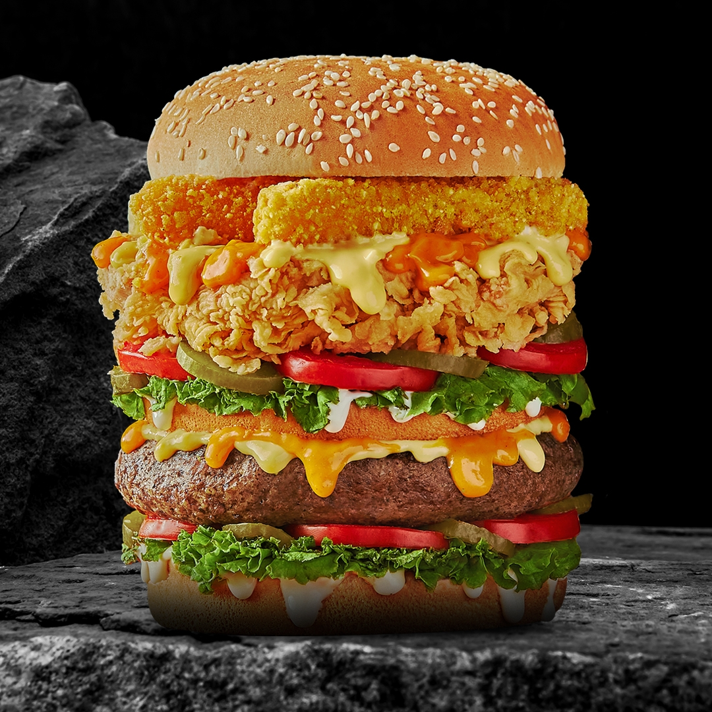

About US

Have you ever thought about trying food from the Heart Attack menu in Egypt?
It is one of the
most famous fast food restaurants in Egypt,
especially because it owns many branches throughout the republic,
and is still looking for expansion until now, which indicates its success and
continuity.
"Sobhey Injection" is one of the famous restaurants in Egypt and Cairo.
It offers many different
meals and types of sandwiches,
such as burgers, chicken, family meals, and the "Cheese Fountain" that is distinguished by it.
The restaurant has been able to gain wide popularity as well as maintain its quality and
customers,
and this is what makes it a special choice for fans of fried chicken meals, burgers, and
fast food in general.